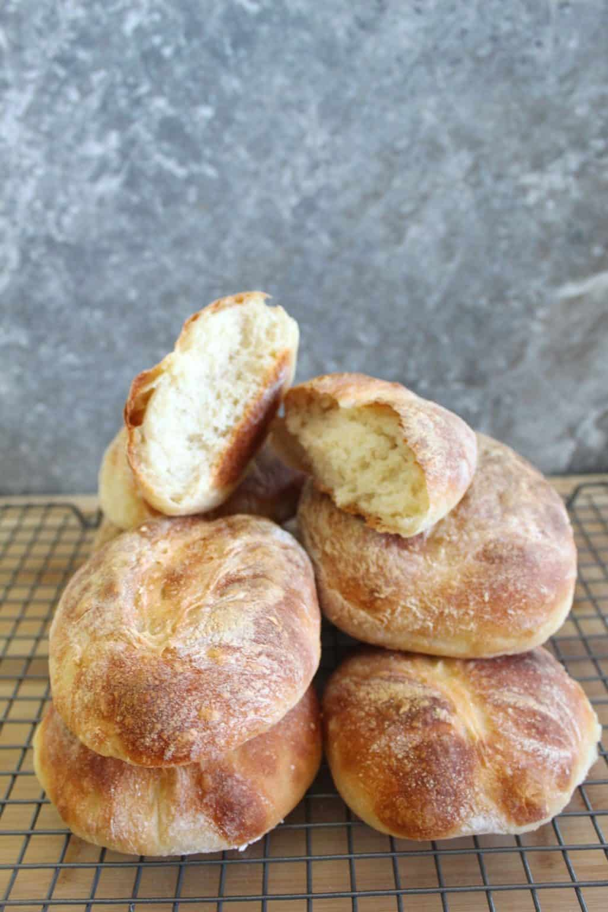

Five Ingredient Bread Recipe

Description
Experience the joy of homemade bread with this simple and foolproof recipe that's perfect for beginners and seasoned bakers alike! With just a handful of basic ingredients like flour, yeast, salt, and water, you can create a loaf of delicious bread right in your own kitchen. The beauty of this easy bread recipe lies in its versatility—you can customize it with herbs, seeds, or grains to suit your taste preferences. The dough comes together effortlessly and requires minimal kneading, making it a convenient option for busy schedules. After a short rise and a quick bake in the oven, you'll be rewarded with a golden-brown crust and a soft, fluffy interior that's ideal for sandwiches, toast, or simply enjoying with a smear of butter. Say goodbye to store-bought bread and hello to the satisfaction of baking your own fresh, flavorful loaf at home!
Ingredients
- Bread flour
- Instant yeast
- Sugar
- Salt
- Water
Steps
- Separate flour into: 4 cups, .5 cups, & .5 cups.
- Add powdered yeast in a bowl with sugar and 1 cup of warm water. Mix until dissolved.
- Add salt to 4 cups of bread flour. Mix well. Create a hole in the middle.
- Pour yeast into the middle slowly, and mix as you go until all mix is poured.
- Add 1.5 remaining cups of water, mixing as you go.
- Use 0.5 cups of flour and your hands to fold the dough.
- Remove the dough. Dust bowl with flour and place dough back in. Cover with a towel and let rise until it triples in size (about 1.5 hours)
- Remove dough onto clean surface and knead dough. Use last 0.5 cup of flour to dust the surface.
- After kneading, cut in 8 equal sizes.
- Knead each individual piece. Place on a parchment paper lined tray about 2 inches apart from each other.
- Cover and let dough rise again for about 45 minutes.
- Cut a straight line on each piece.
- Preheat oven to 450 degrees Farenheit.
- Place a baking tray with water in the bottom rack to create steam.
- Bake for 10 minutes. Lower temperature to 400 degrees Farenheit. Bake another 10 minutes.
- Remove from oven and place in a cooling rack.
- Let bread cool for at least 30 minutes before cutting.
- Enjoy!